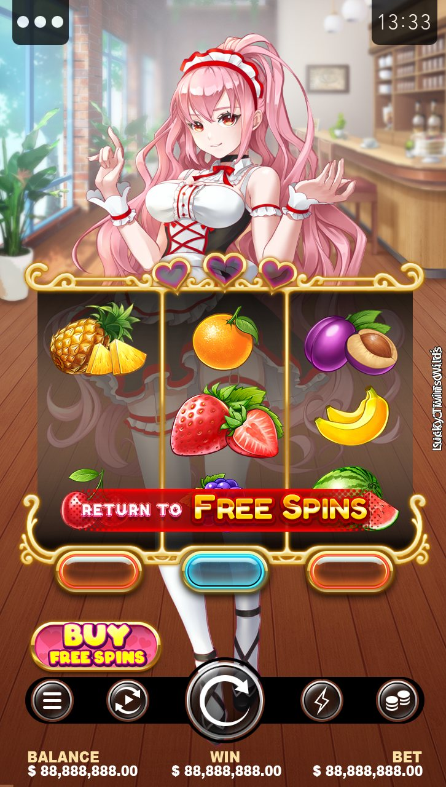

Doki Doki Parfait
A maid café themed slot, and part of the studio's move into the Japanese market. I designed the characters and animated them, including the full screen cut-ins and the bonus sequence.
It was picked to represent the studio at a group-wide creative symposium.
Character design2D animationIn-game UIJapanese market